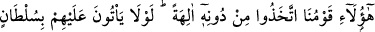
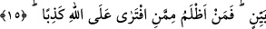
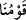

içindir. Çünkü onlar putlarına “ilâhlar” diyorlardı.
“Yoksa” şâyet böyle dersek, başkalarına taparsak “saçma sapan konuşmuş” haddi
aşan söz söylemiş “oluruz.”
İbâdet mâbûdun ulûhiyetini îtiraf ve O’na yalvarmadan hâlî olamayacağı için
“konuşmuş/söylemiş oluruz” denilmiştir. Yâni eğer biz O’ndan başkasına ilâh deseydik,
Allah’a yemin olsun ki aklın sınırlarının dışında ve zâlimlikte ileri gitmiş bir söz
söylemiş olurduk.
15. Şu bizim kavmimiz Allah’tan başka tanrılar edindiler. Bâri bu tanrılar
konusunda açık bir delil getirseler. (Ne mümkün!) Öyle ise Allah hakkında yalan
uydurandan daha zâlimi var mı?
“Şu bizim kavmimiz” Şu, denilmesi Allah’a ortak koşan putperest toplumu
aşağılamak içindir. Yâni bu topluluk, yâni Efsus halkından bir topluluk neseb
bakımından bizim insanlarımızdır.
et-Te’vîlâtü’n-Necmiyye’de şöyle der: “Îmanlı gençler içinden çıktıkları toplumu
nitelerken “ kavmünâ (kavmimiz, milletimiz)” demişlerdir. Yâni, biz onlardandık,
dalâlet sebebiyle onların zümresindendik. Allah bize hidâyet ve ma‘rifeti nimet olarak
verdi. Bizimle onların arasını hakka riâyet ve inâyetle ayırdı. Bizi hevâya, dünyaya ve
şehvetlerine ibâdetten kurtardı.
“Allah’tan başka tanrılar edindiler.” Yâni putlara taptılar, bilgisizlikle onları tanrı
edindiler.
Ebû Hayyân şöyle der: “Buradaki “edindiler” anlamındaki fiil “yaptılar”
anlamındadır. Çünkü bu putlar, onların kendi elleriyle yontarak şekil verdikleri
şeylerdi.
Mesnevî’de der ki:
Nakşedilmiş, bezenmiş tahta ve taş önünde
Nice aptallar baş kor, secde eder!
Şeytan insanları azgınlık yoluna düşürmek için uğraşıp durur,
Şeyh ise onları doğru yola götürmeye uğraşır.
“Bâri bu tanrılar” onların tanrı oldukları “konusunda açık bir delil getirseler. (Ne
mümkün!)” Yâni onlar öyle tanrılara tapıyorlar ki onlara ibâdet etmenin doğruluğuna
dâir vahiy cihetinden hiçbir delilleri, hiçbir duyumları, kesin bilgileri ya da aklî
delilleri yoktur.
Burada şu husûsa delil vardır: Dînî bir delile dayanmayan şey makbûl değildir. Âyet